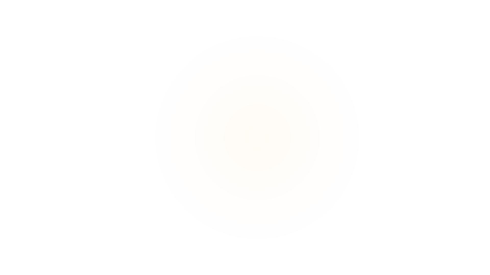
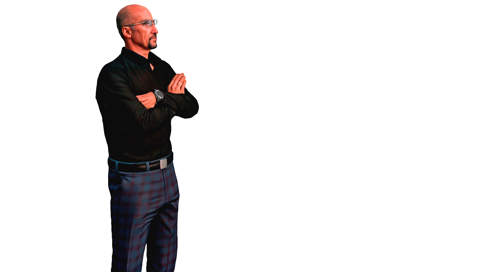

О партии
The Radical-Liberal Party — это политическая организация, ставящая приоритет на свободу, права граждан и верховенство закона. Мы выступаем за реформы, направленные на усиление прав и свобод жителей, борьбу с коррупцией и формирование прозрачного, профессионального правительства.
Руководство партии
 Walter Heisenberg — Опытный юрист привыкший отстаивать права граждан.
Программа
🔸 Защита прав граждан
Мы стремимся защищать права и свободы каждого гражданина. В числе наших приоритетов — борьба с коррупцией, незаконными задержаниями и превышением полномочий со стороны правоохранительных органов.
🔸 Усиление надзорной деятельности
Мы выступаем за создание независимых структур, осуществляющих контроль за работой правоохранительных органов и правительственных учреждений.
🔸 Формирование правительства
Мы будем формировать кабинет, состоящий из профессионалов, свободных от политических или криминальных интересов.
Новости
Контакты
Связаться с нами: ...
Вступить в партию
Здесь будет форма для вступления в партию.